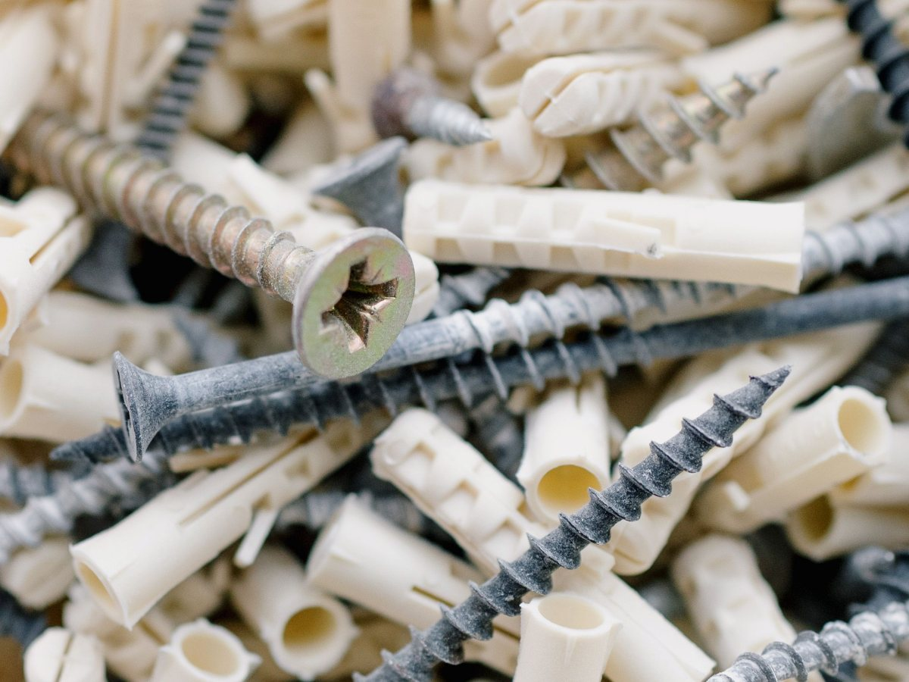
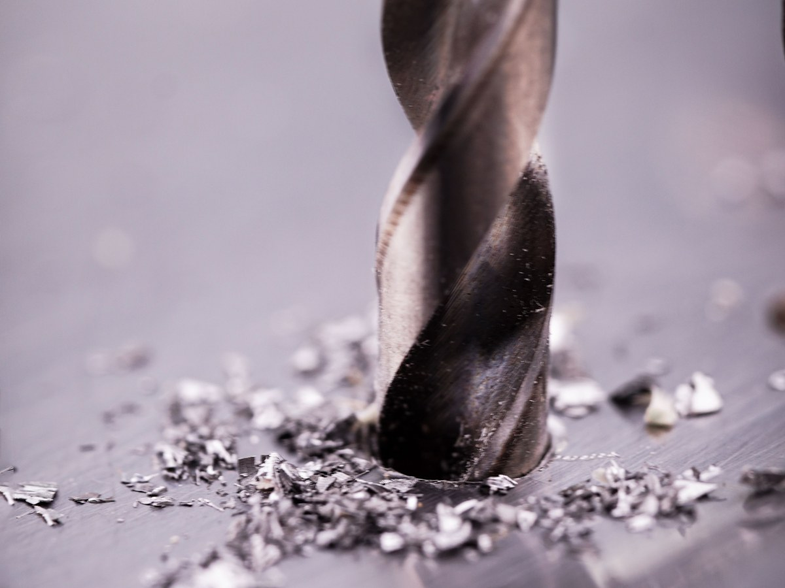
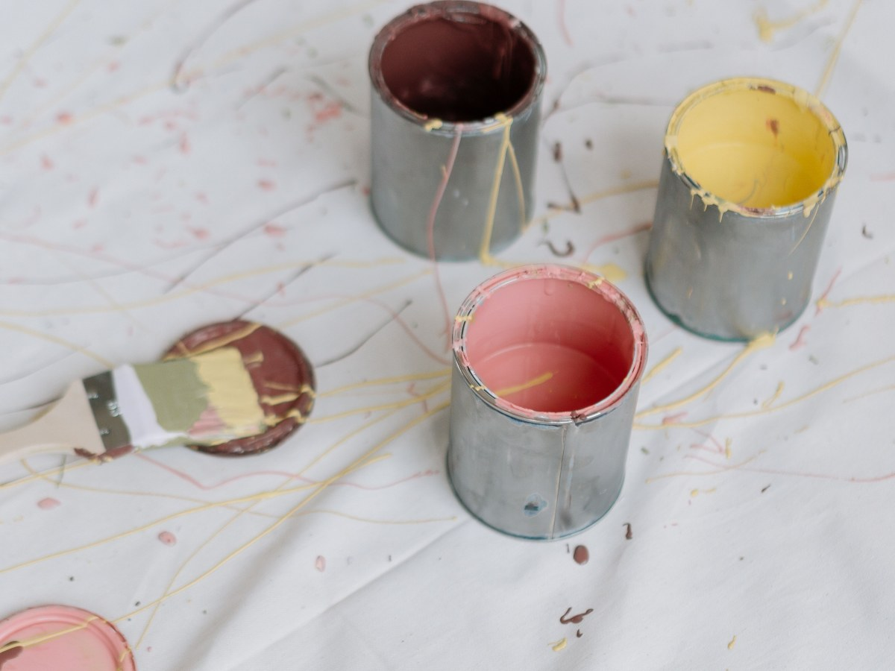
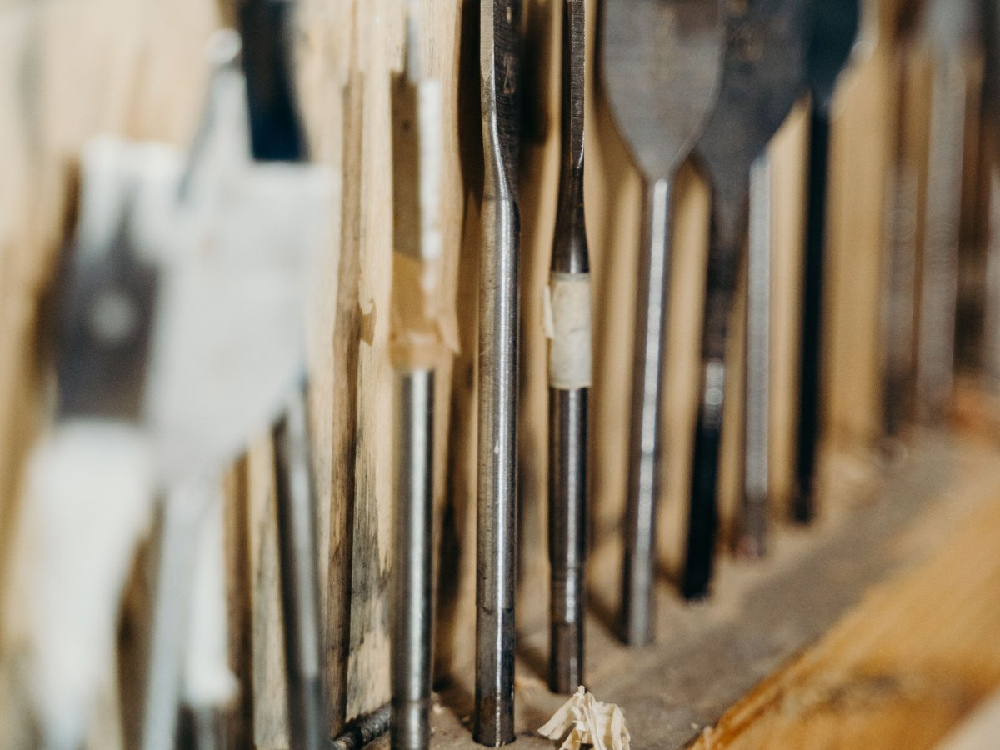
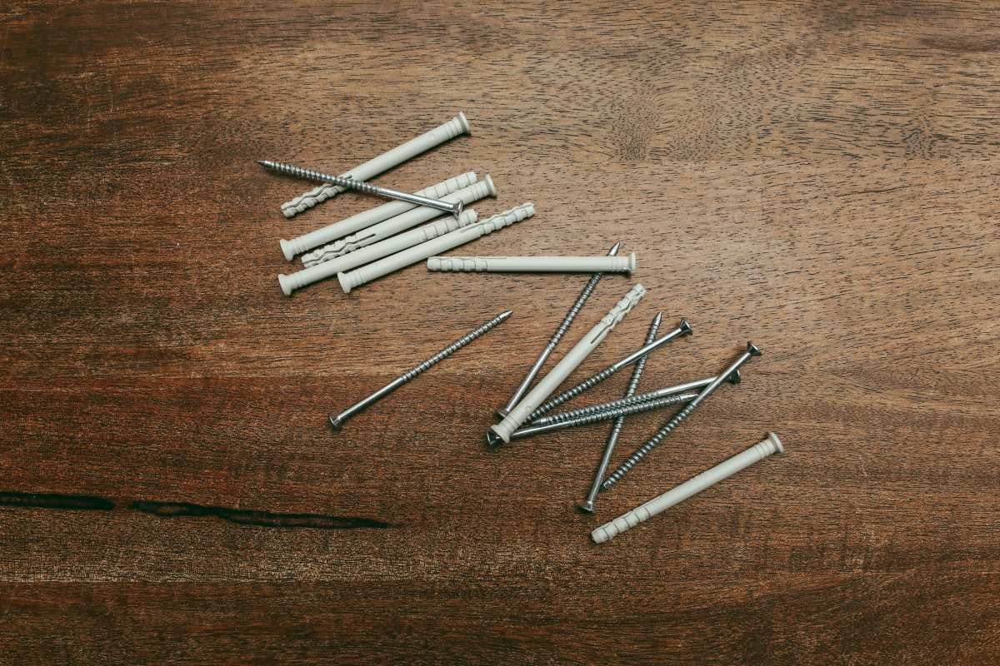
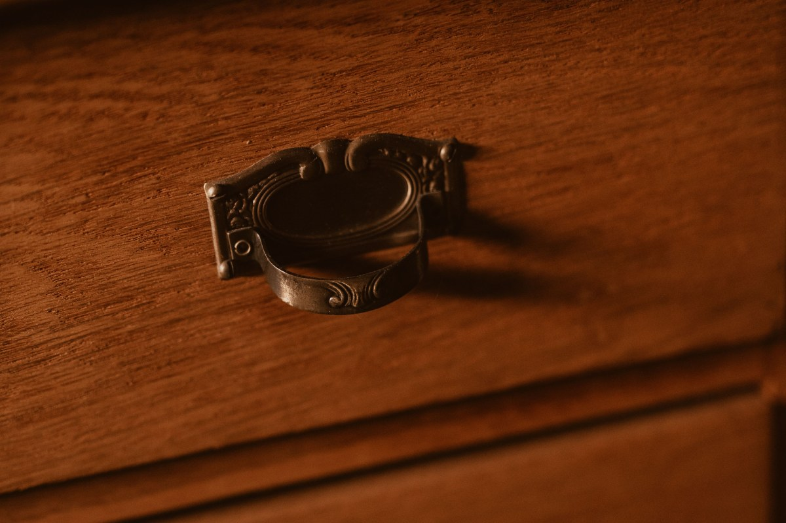
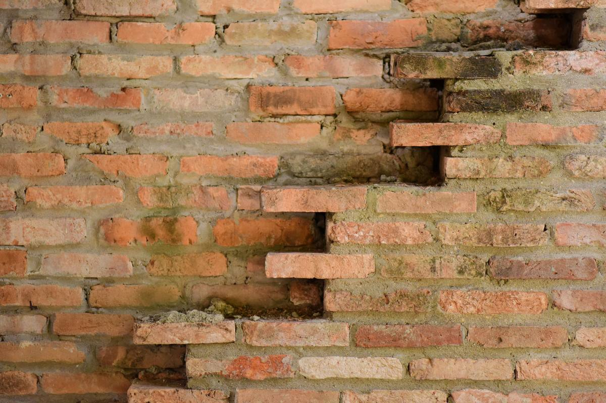
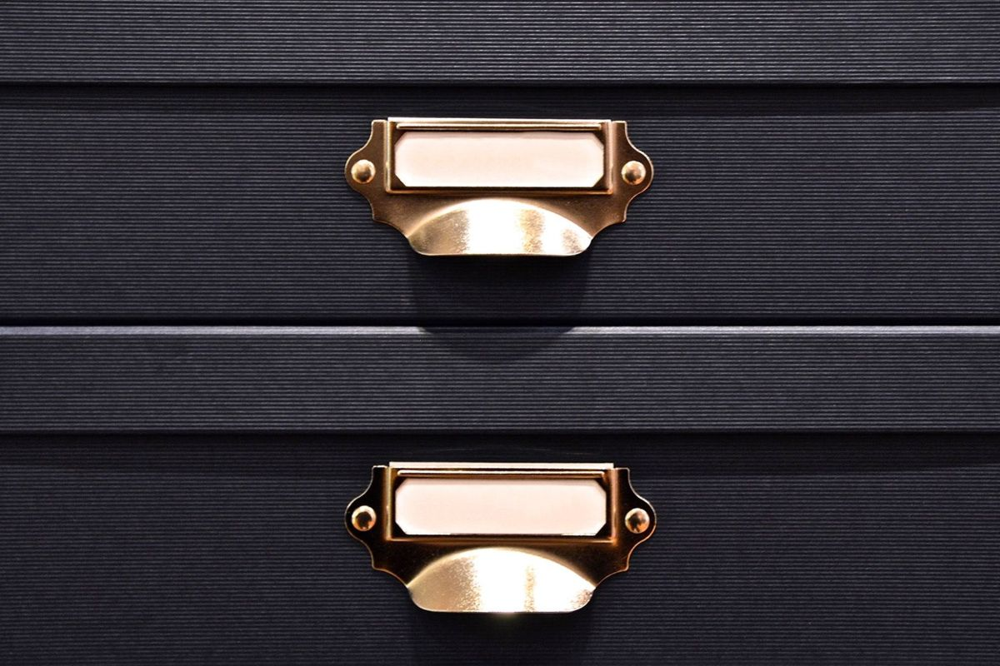
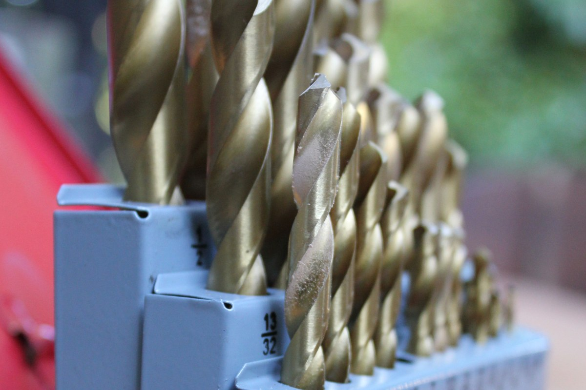

Ferretería · Gorbea
En Gorbea le dicen donde Néstor Concha.
Tornillos, herrajes y herramienta en Lord Cochrane 800.
- 73reseñas en Google
- 4,9de nota
- 1nombre que todo el pueblo conoce
- 0páginas propias: sólo Facebook
La pregunta de todos los días
Qué tarugo y qué broca, según dónde va
Diga qué pared es y sale con lo justo.
- Ladrillo
Tarugo plástico
Broca para concreto del mismo número.
- Volcanita
Tarugo paloma
Se abre por detrás; sin percutor.
- Madera
Sin tarugo
Tornillo directo, con guía fina.
- Hormigón
Tarugo largo
Broca de widia y taladro percutor.
Para cada caso, pregunte en el mesón.
Cuatro tornillos son cuatro tornillos.
Por unidad o por caja
Lo del mostrador
-

Se venden sueltos
Tornillos y pernos
Los cuatro que faltan.
-

Para cada pared
Tarugos
Plástico, paloma y metálicos.
-

Concreto, madera y fierro
Brocas
Por número.
-
Puertas y muebles
Herrajes
Bisagras, pestillos y manillas.
-

Para terminar
Pintura
Esmalte, látex y diluyente.
-

De mano
Herramienta
Lo que se necesita para el arreglo.
Lo que hay de verdad lo confirma la ferretería.
4,9 de 73 personas del pueblo.
El negocio se llama como el que atiende
Detrás del mesón
Cajón por cajón






Fotos de referencia: el mostrador de verdad lo muestra la ferretería.
Dónde estamos
Lord Cochrane 800, Gorbea
- Dirección
- Lord Cochrane 800
- +56 9 4439 3054
- Reseñas
- 73 en Google, nota 4,9
- Horario
- Falta el horario
¿No sabe cómo se llama la pieza? Mándele una foto por WhatsApp.
Lord Cochrane 800, Gorbea Abrir en Google Maps
Para Néstor
Qué es real y qué falta
Lo verificado
El nombre, la dirección, el WhatsApp y las 73 reseñas con 4,9.
Lo de ejemplo
La guía de tarugos y brocas, y lo que hay en el mostrador.
Lo que falta
El horario y fotos del local, del mostrador y de los cajones.